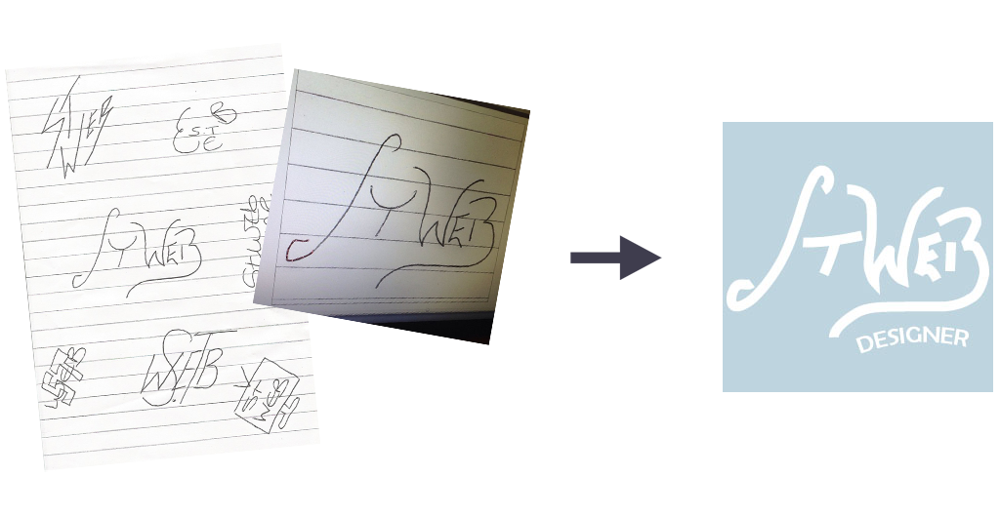
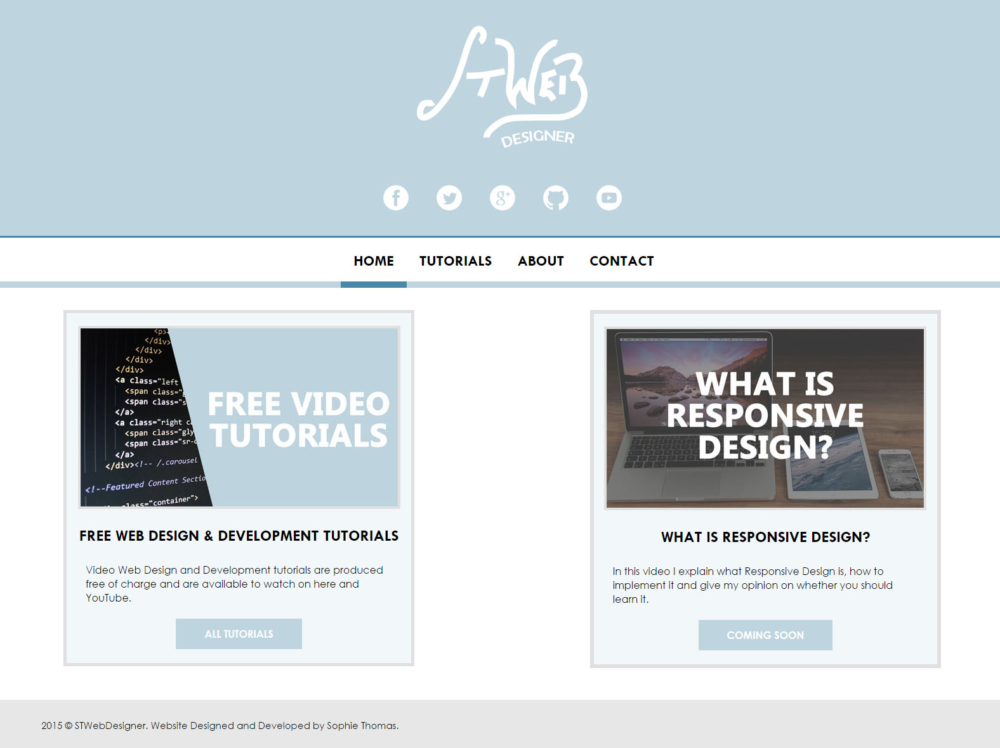
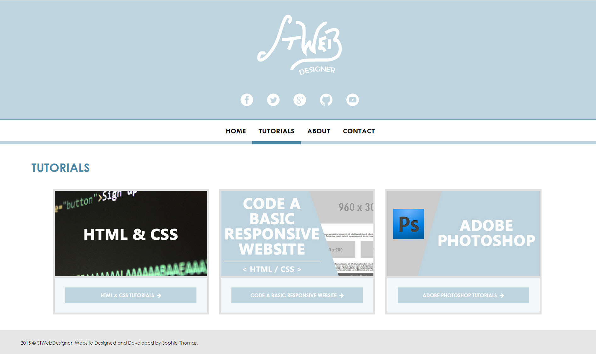
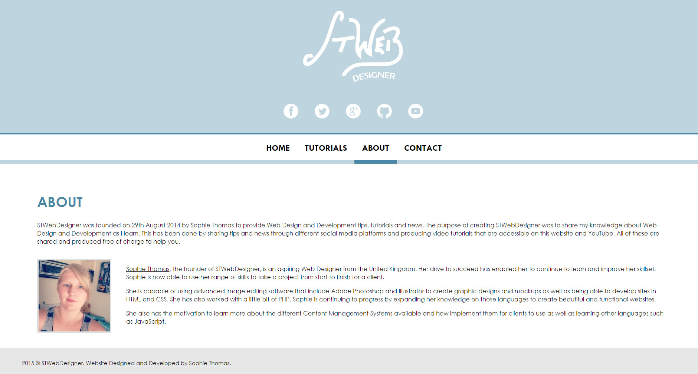
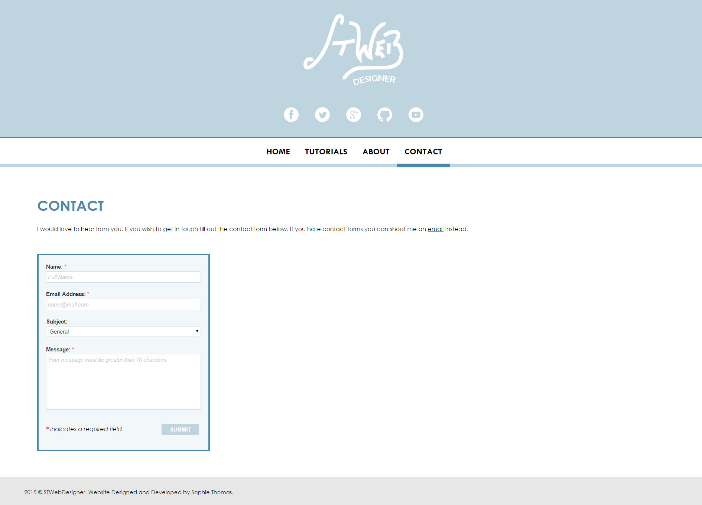

STWebDesigner
Project Completion Date: 28th March, 2015
I created STWebDesigner in August of 2014 but it has never had its own identity. I decided it was time to give STWebDesigner its own brand. This consisted of creating a logo and website.
Colour Scheme
The first stage of the branding process was finding the right colour scheme to use for the website, logo and all related designs that would be created. After trailing many different colours I decided to use six colours (see below) that worked really well together.
Logo
The creation of the actual logo was the hardest part as it took quite a while for me to create something I was happy with. Using the combination of writing on pen and paper and image editing software made the end product have a professional and polished look and feel to it.

Website
After going through a few ideas I decided to create a simple, responsive website that both informed people of what STWebDesigner is and displayed the tutorials I produce under the name of STWebDesigner.




The overall design of the website is very clean and simple. This enhances the user experience and readability of the content. I also added high quality images and slight hover effects to the website to make it more appealing.
Overall, this website meets my intended purpose and target audience while providing a good experience to users when browsing around the site.